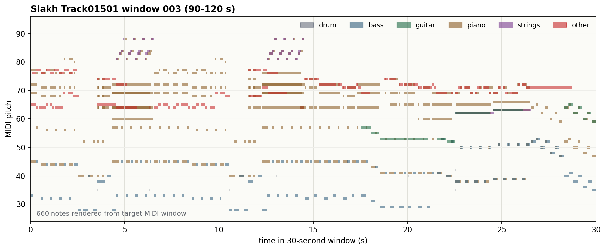
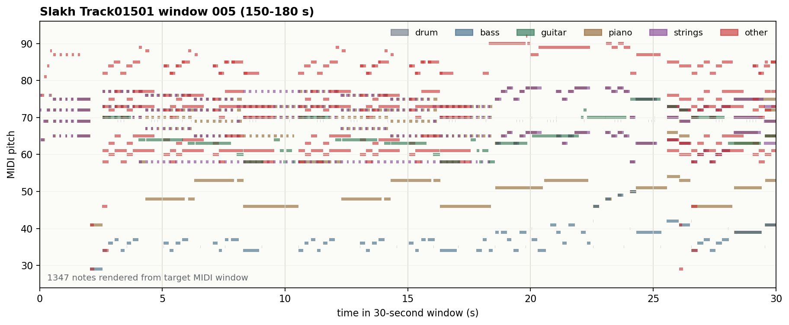

S_plan
Learned symbolic planning token from MIDI-derived structure. Evaluated through reconstruction, acoustic-token proxy, stream controls, and MIR recovery.
This page keeps the current claim boundary explicit: S_plan
is the learned symbolic planning token evaluated through reconstruction,
acoustic-token proxy, stream controls, and MIR recovery; S_LLM
is the planned LLM-supervised symbolic tokenizer/token stream and is not
trained yet.
S_plan
Learned symbolic planning token from MIDI-derived structure. Evaluated through reconstruction, acoustic-token proxy, stream controls, and MIR recovery.
S_LLM
LLM-supervised symbolic tokenizer/token stream. Not trained yet; should follow EXP031A controls.
All playable clips in this page are project-local Slakh audio assets, avoiding copied web-audio dataset material.
Inference provenance
The demo separates held-out test-set aggregate results from fixed per-sample examples. EXP001 uses Slakh test QA outputs directly. EXP029 and EXP031A include test-set aggregate metrics, while the currently saved per-sample fixed examples come from validation windows.
| Block | Actual artifact | Split | What the demo can claim |
|---|---|---|---|
| UniAudio compatibility | EXP001 Slakh QA model outputs | test | Frozen UniAudio2 diagnostic behavior and failure cases |
| Music downstream gain | EXP029 stream-control final metrics + fixed examples | test aggregate + validation examples | Aligned S_plan improves token-level proxy; per-sample card is illustrative |
| Symbolic downstream | EXP031A MIR-supervised metrics + fixed examples | test aggregate + validation examples | MIR structure is recoverable; per-sample cards show capability and failure mode |
Demo block 01
This block tracks non-music audio and speech task families inherited from UniAudio 2.0 that a future final LALM integration must preserve. It is not yet a completed final-LALM preservation claim.
Add only after a symbolic-aware audio codec, residual codec branch, or decode path is actually trained and evaluated.
Placeholder for checking whether symbolic conditioning preserves general UniAudio2 text-to-speech behavior.
Placeholder for non-speech audio generation examples where symbolic music tokens should not degrade generic audio generation.
Placeholder for instruction-following speech generation where text controls style, speaker, emotion, or delivery.
Placeholder for speech generation conditioned by an audio reference, such as voice, prosody, or acoustic style.
Evaluation table 01
Caption: this block is a preservation checklist, not a completed result table. The current experiments have not yet produced paired baseline-vs-Symbolic-Aware inference samples for UniAudio2.0 non-music audio or speech tasks.
| Task family | Required comparison | Primary metrics / assets | Current claim status |
|---|---|---|---|
| Audio codec reconstruction | Frozen UniAudio2 codec vs symbolic-aware decode path | FAD/KL, mel/LSD, SI-SDR, side-by-side listening | Not trained / not claimed |
| Text-to-Speech | Same text prompt under baseline and Symbolic-Aware conditions | Speech sample pair, intelligibility, speaker/prosody quality | Future preservation demo |
| Text-to-Sound | Same sound-event prompt under baseline and Symbolic-Aware conditions | Prompt adherence, audio quality, event correctness | Future preservation demo |
| Instructional TTS | Text/audio instruction before and after symbolic conditioning | Instruction adherence, similarity, speech quality | Future preservation demo |
Downstream task slot
Future demo slot for side-by-side listening and metrics: original audio, frozen UniAudio2 codec reconstruction, and symbolic-aware codec/reconstruction output.
| Current status | No symbolic-aware audio codec or decoder branch has been trained yet. |
|---|---|
| Expected evidence | Audio samples plus FAD/KL, mel/LSD, SI-SDR, and reconstruction-listening notes. |
Downstream task slot
Future compatibility slot for verifying that symbolic conditioning does not degrade base UniAudio2 text-to-speech behavior.
| Prompt type | Text prompt to speech waveform. |
|---|---|
| Needed demo | Baseline and symbolic-conditioned speech samples with the same text. |
Downstream task slot
Future compatibility slot for generic sound-event generation, separated from speech and music generation.
| Prompt type | Environmental or event-audio text prompt. |
|---|---|
| Needed demo | Baseline and symbolic-conditioned outputs with quality and prompt-adherence notes. |
Downstream task slot
Future slot for instruction-conditioned speech generation, such as style, emotion, speaker, or delivery controlled by text.
| Prompt type | Instruction plus spoken content. |
|---|---|
| Needed demo | Prompt, baseline output, symbolic-conditioned output, and instruction-adherence check. |
Downstream task slot
Future slot for speech generation conditioned by a reference audio clip, such as voice, prosody, or acoustic style transfer.
| Prompt type | Reference audio plus target text. |
|---|---|
| Needed demo | Reference clip, generated pair, speaker/prosody similarity, and quality metrics. |
Demo block 02
This block presents UniAudio 2.0 music-language and music-generation tasks as comparison demos: frozen/non-symbolic UniAudio2 behavior versus Symbolic-Aware conditions. The current concrete evidence includes frozen music QA and an EXP029 aligned-vs-control stream proxy; text-to-music and song-generation demos are reserved as explicit future slots.
Frozen UniAudio2 is evaluated on Slakh instrument-presence prompts. The missing paired comparison is the same prompt set under a Symbolic-Aware LALM condition.
Same-window UniAudio semantic-token loss is compared under aligned, shuffled, and dummy symbolic streams.
Placeholder for prompt-to-music generation where symbolic planning should improve musical structure without hurting audio quality.
Placeholder for vocal/music generation examples, separated from pure instrumental text-to-music.
Evaluation table 02
Caption: EXP001 is a frozen UniAudio2 music-QA diagnostic on the Slakh test split. EXP029 is the current controlled Symbolic-Aware stream result; the aligned condition is compared against shuffled and dummy symbolic streams under the same UniAudio-style packing.
| Evaluation | Split / scale | Main result | Interpretation |
|---|---|---|---|
| EXP001 frozen UniAudio2 Slakh QA | test, 151 clips / 906 QA rows | Exact acc. 0.6181; macro-F1 0.3782; active invalid 0.1181 | Useful baseline diagnostic, but brittle and yes-biased |
EXP029 aligned S_plan | test aggregate, 1,385 windows | CE 5.7663; acc. 0.1097; gate 0.00327 | Best controlled stream condition |
EXP029 shuffled S_plan | test aggregate, matched setup | CE 5.7847; acc. 0.1067; gate 0.00319 | Corrupting symbolic alignment hurts the proxy |
| EXP029 dummy stream | test aggregate, matched token budget | CE 5.7852; acc. 0.1068; gate 0.00335 | Controls for extra context/token budget |
Caption: the demo cards below are qualitative examples. They should be read together with this aggregate table; the current EXP029 playable card is illustrative, not a broad decoded-music generation claim.
Sample: Slakh_Track01877_w000_s0000400 | split: test | artifact: EXP001 model outputs
Objective: show the frozen UniAudio2 music-QA baseline before adding a paired Symbolic-Aware comparison.
| Condition | Current artifact | Interpretation |
|---|---|---|
| Frozen UniAudio2 | Available below | Baseline music-language behavior and failure mode |
| Symbolic-Aware LALM | Not generated yet | Needed to claim symbolic conditioning improves or preserves music QA |
| Question | Target | Normal | No audio | Shuffled audio |
|---|---|---|---|---|
| Bass present? | No | Yes | Yes | No |
| Guitar present? | No | Yes | Yes | free text |
| Strings present? | No | Yes | Yes | Yes |
| Synth present? | No | Yes | Yes | Yes |
Interpretation: the frozen baseline can answer some prompts, but it also shows yes-bias and control sensitivity.
A future symbolic LALM demo must show that adding S_plan or S_LLM does not break base audio-language behavior.
| Held-out Slakh QA summary | Value |
|---|---|
| QA rows | 906 |
| Exact accuracy | 0.6181 |
| Macro-F1 | 0.3782 |
| Active invalid rate | 0.1181 |
Missing: final integrated LALM preservation demo with the same prompts before/after symbolic conditioning.
S_plan lowers semantic-token lossSample: Slakh_Track01501_w000_s0000000 | split: validation fixed example | artifact: EXP029 fixed examples
Objective: test whether aligned symbolic context reduces teacher-forced UniAudio semantic-token uncertainty.
| Same-window fixed example | Loss ↓ | Accuracy ↑ | Claim |
|---|---|---|---|
Aligned S_plan | 5.226 | 0.138 | Best same-sample proxy |
| Shuffled symbolic stream | 5.301 | 0.119 | Corrupted alignment |
| Dummy symbolic stream | 5.280 | 0.125 | Token-budget control |
| Concrete inference artifact | Preview |
|---|---|
| Implemented output | semantic_audio_token_preview |
| Target codebook-0 head | 1519, 3072, 3072, 3072, 3072, 3072, 3072, 1880, 3072, 3072, 1519, 1519 |
| Aligned prediction head | 1519, 838, 1880, 838, 1880, 2071, 1880, 2071, 3072, 4099, 1519, 1397 |
| Not yet output | decoded waveform, MIDI, or free-text answer |
| Held-out test aggregate | Aligned S_plan |
|---|---|
| Test windows | 1,385 |
| Test CE / PPL | 5.7730 / 321.50 |
| Test accuracy | 0.1093 |
| Prefix-8 accuracy | 0.1707 |
Interpretation: this supports causal token-level utility. It does not yet prove decoded waveform quality or open-ended music reasoning.
Downstream task slot
Future slot for prompt-to-music generation, where the key question is whether Symbolic-Aware conditioning improves musical structure without hurting audio quality.
| Prompt type | Music style, instrumentation, structure, or genre prompt. |
|---|---|
| Needed demo | Baseline UniAudio2 generation and Symbolic-Aware generation on the same prompt. |
Downstream task slot
Future slot for vocal/music song generation, kept separate from instrumental text-to-music because lyrics, vocal quality, and arrangement require different evidence.
| Prompt type | Lyrics, style, form, or song-level instruction. |
|---|---|
| Needed demo | Baseline UniAudio2 song output and Symbolic-Aware song output with structure-control metrics. |
Demo block 03
These cases are not claimed as impossible for prior systems. They are the symbolic-representation task family where this project should provide a clearer interface: recover, convert, or condition on MIDI-like musical structure.
Recover instruments, key, meter, tempo, and texture attributes from
S_plan as a symbolic planning-token diagnostic.
Use symbolic or MIDI-like input as a controllable plan for audio music generation, then compare structure adherence and audio quality.
Convert music audio into MIDI-like structure and visualize input/output piano rolls to make symbolic recovery inspectable.
Evaluation table 03
S_plan gate: aggregate results before examplesCaption: this table reports completed EXP031A aggregate metrics. The qualitative cards below are validation fixed examples; the table is the main quantitative evidence for symbolic-aware MIR/music recovery.
| Split / step | Loss | Inst. macro-F1 | Inst. micro-F1 | PC macro-F1 | Meter acc. | Weak key acc. | Density acc. | Polyphony acc. |
|---|---|---|---|---|---|---|---|---|
| Valid 375 | 8.6298 | 0.5284 | 0.7172 | 0.8118 | 0.5321 | 0.3492 | 0.7074 | 0.6322 |
| Valid 625 | 6.5229 | 0.4986 | 0.8047 | 0.8514 | 0.7661 | 0.5484 | 0.8873 | 0.7697 |
| Test 625 | 6.6153 | 0.5014 | 0.7908 | 0.8541 | 0.7834 | 0.5567 | 0.8743 | 0.7614 |
| Test 375 | 8.6788 | 0.5143 | 0.7022 | 0.8124 | 0.5899 | 0.3776 | 0.7019 | 0.6297 |
Caption: step 625 is better overall, while step 375 is better mainly on instrument macro-F1. This suggests rare-instrument calibration/class imbalance rather than a simple representation-collapse story.
| Control / missing evidence | Why it matters | Current observation | Next action |
|---|---|---|---|
| Zero-feature control | Tests target priors and head bias | valid/375 snapshot remains high on micro-F1, pitch class, meter, density | Complete final valid/test run |
| Label-shuffle control | Tests feature-target alignment | Not completed in the main claim table | Run matched B4096/S625 setup |
| Threshold calibration | Tests fixed 0.5 multilabel threshold | Not run | Calibrate per-class thresholds on valid, report test |
| Test-split qualitative export | Avoids relying on validation fixed examples | Current demo examples are validation fixed windows | Export matched success/boundary cases from test split |
Slakh_Track01501_w003_s0009000 | split: validation fixed example

| Attribute | GT | Prediction | Score / Error |
|---|---|---|---|
| Instrument set | bass, drums, guitar, other, piano | bass, drums, guitar, other, piano | F1 1.000 |
| Key | A minor | A minor | Match |
| Meter | 4/4 | 4/4 | Match |
| Tempo | 120.00 BPM | 89.32 BPM | Error 30.68 BPM |
Prediction caption proxy: This symbolic window contains drums, bass, guitar, piano, other; estimated around 89.32 BPM in 4/4, with weak key/chord evidence around A minor.
Slakh_Track01501_w005_s0015000 | split: validation fixed example

| Attribute | GT | Prediction | Score / Error |
|---|---|---|---|
| Instrument set | bass, drums, guitar, other, percussion, piano, strings | bass, drums, guitar, other, piano | F1 0.833 |
| Key | A# minor | C# major | Mismatch |
| Meter | 4/4 | 12/8 | Mismatch |
| Tempo | 120.00 BPM | 130.63 BPM | Error 10.63 BPM |
Interpretation: this is useful for a research demo because it shows both capability and failure mode.
Prediction caption proxy: This symbolic window contains drums, bass, guitar, piano, other; estimated around 130.63 BPM in 12/8, with weak key/chord evidence around C# major.
Symbolic task slot
Future demo slot for using MIDI or a MIDI-like symbolic plan as the control input for music audio generation. The demo should show whether the generated waveform follows instrument, pitch, rhythm, and form cues while preserving audio quality.
| Comparison | Symbolic-Aware generation from MIDI plan vs non-symbolic text/audio baseline. |
|---|---|
| Visualization | Input MIDI piano roll, generated-audio transcription or aligned proxy piano roll. |
| Metrics | Structure adherence, instrument F1, pitch/rhythm overlap, FAD/KL, listening notes. |
Symbolic task slot
Future demo slot for converting music audio into MIDI-like structure. This is the natural visual companion to the current EXP031A MIR recovery: users should see the input audio, target/pseudo-target piano roll, and predicted piano roll side by side.
| Comparison | Symbolic-Aware transcription/recovery vs baseline audio-only transcription or MIR extractor. |
|---|---|
| Visualization | GT MIDI piano roll and predicted MIDI piano roll for the same audio window. |
| Metrics | Note F1, onset/offset F1, instrument F1, key/meter/tempo accuracy. |
S_LLM examples after LLM-supervised tokenizer training.